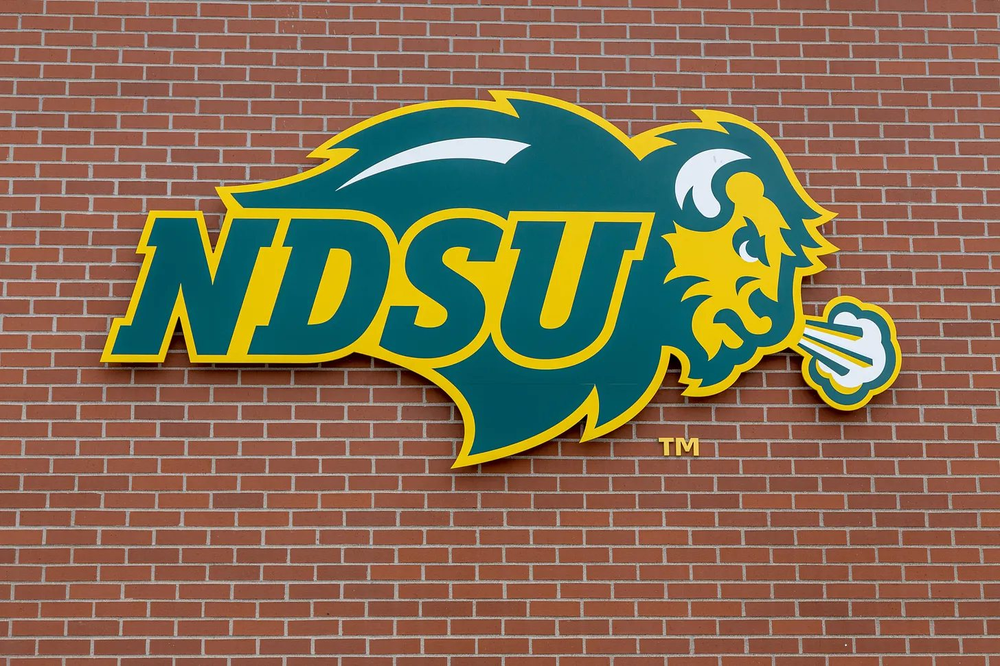
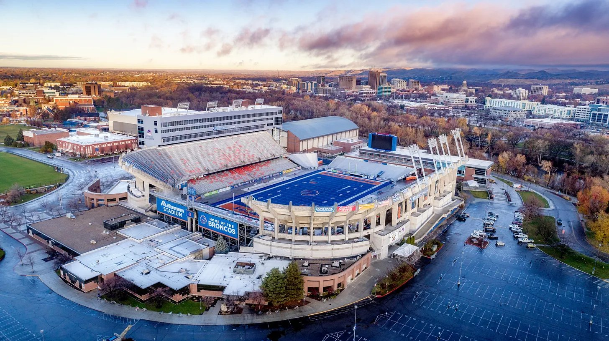
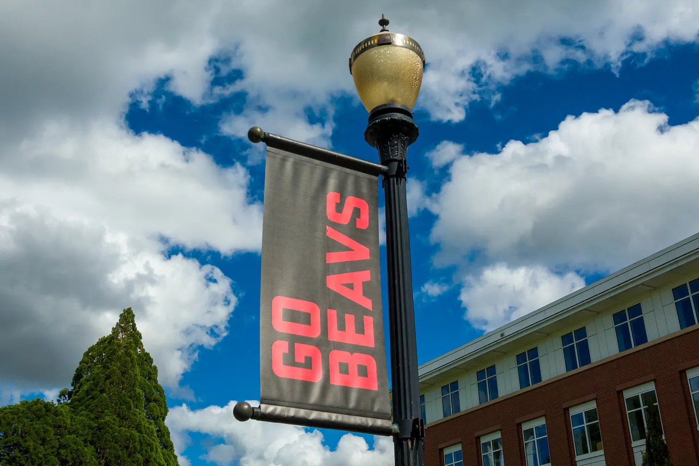
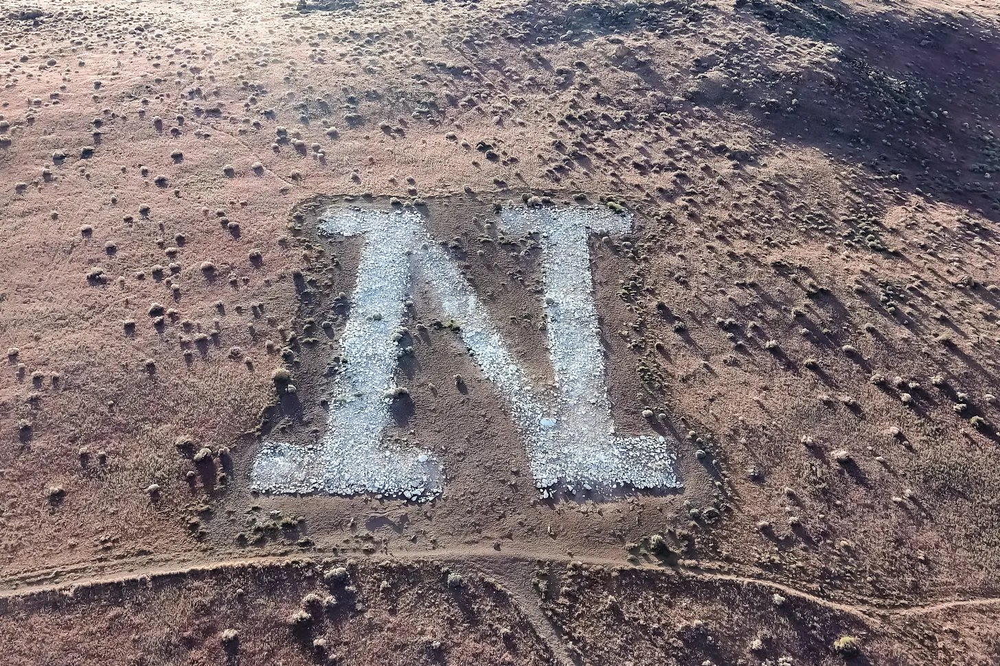

The Boys were victorious yet again against The Bot last week, taking a solid lead as we approach the final two weeks of the season.
This week presented an interesting challenge: during our pre-week BvB meeting, our collective score predictions were closer to The Bot’s than they had been all season. That made things tricky, but we were still able to come to a solid conclusion.
With no Wednesday night MAC-tion due to Sacramento State being on bye, this week’s edition is coming just a tad later than normal (this was not an excuse for us to play GTA VI instead of writing our articles).
Let’s see what we have to offer against The Bot this week.
On bye: Sacramento State


UTEP vs. Air Force
UTEP 1-9 (0-6), Air Force 8-2 (4-2)
Air Force comes into this matchup with a pretty significant advantage over UTEP. The Falcons are 8-2 on the season and have been one of the better rushing teams in the country, averaging over 330 yards on the ground per game. UTEP, on the other hand, has struggled throughout the season, sitting at 1-9 and averaging just over 14 points per game. Air Force has also been much better defensively, allowing fewer than 20 points per game.
I think this game comes down to Air Force controlling the line of scrimmage and keeping the ball on the ground. UTEP has struggled to stop opposing offenses, and going into Falcon Stadium is not going to make things any easier. I don’t see UTEP having enough offensive firepower to keep up with Air Force. I’m taking the Falcons to win comfortably, 33-9.
Bot spread Air Force −21.8Bot O/U 51.7


New Mexico vs. Wyoming
New Mexico 8-2 (5-1), Wyoming 7-3 (6-1)
Could we be looking at an upset in Laramie this weekend?
New Mexico is heading to Wyoming, and this game has some serious Mountain West implications!

For the Lobos, keep an eye on running back Scottre Humphrey. He’s rushed for 736 yards and an impressive 14 touchdowns this season! If New Mexico can establish the running game, they’ll be tough to beat.
But don’t count out Wyoming, especially playing at home. Quarterback Landon Sims is coming off a strong performance against UTEP, where he completed 19 of 25 passes for 289 yards and a touchdown!
If Sims can build on that performance, Wyoming has a real shot at pulling off the upset.
I think this game comes down to the final few minutes, but I’m trusting New Mexico to make just enough plays to escape Laramie with a win.
Bot spread New Mexico −8.3Bot O/U 46.4


Delaware vs. New Mexico State
Delaware 5-5 (3-3), New Mexico State 3-7 (2-4)
Delaware heads into this matchup at 5-5 and has a chance to become bowl eligible with a win. The Blue Hens have been pretty good offensively this season, averaging almost 30 points per game. Quarterback Nick Minicucci has been a big part of that success, throwing for over 2,100 yards and 18 touchdowns. New Mexico State is coming into the game at 3-7 and has struggled to find consistency offensively, although running back James Jones has been a bright spot with over 1,000 rushing yards this season.
I think Delaware has the advantage through the air, and that could be the difference in this game. New Mexico State has been decent defensively, so I don’t expect Delaware to completely run away with it. The Aggies should be able to keep things competitive, especially playing at home, but I like Delaware’s overall offensive production a little more. With bowl eligibility on the line, I think the Blue Hens find a way to get the win, 30-16.
Bot spread Delaware −1.8Bot O/U 54.9


Northern Illinois vs. North Dakota State
Northern Illinois 0-10 (0-6), North Dakota State 8-2 (5-2)
North Dakota State has a great opportunity to pick up another win this weekend against a Northern Illinois team that has really struggled this season. The Bison come into the matchup at 8-2, while Northern Illinois is still searching for its first win at 0-10. North Dakota State has been especially impressive defensively, allowing just 12 points per game, which ranks among the best defenses in the country. Northern Illinois has had trouble moving the football consistently and is averaging just 15.6 points per game.

I think North Dakota State is going to have control of this game from the beginning. The Bison are playing at home in the Fargodome, where they should have a pretty big advantage. Northern Illinois has struggled against both good and average opponents this season, and I don’t see that changing against one of the better defenses in the country. North Dakota State should be able to establish its offense early and force Northern Illinois into some difficult situations. I’m taking the Bison to win 35-10.
Bot spread North Dakota State −23.5Bot O/U 48


Washington State vs. Texas State
Washington State 2-8 (1-5), Texas State 6-4 (4-2)
Prior to last week’s results, the Wazzu-Texas State matchup seemed to be an unstoppable force versus a movable object, given how well Texas State’s offense had been performing and how poorly the Washington State defense had been playing. However, the Cougars’ 73-7 beatdown of Colorado State changes how this matchup is going to look.
Washington State is only 2-8 on the season, but thanks to Saturday’s 66-point win, the Cougars now sport an even 155-155 scoring margin in conference play. Freshman Owen Eshelman has been playing extremely well for the Cougars, putting up 914 yards through the air and 284 yards on the ground, alongside nine total touchdowns, in just four games.
Running back Kirby Vorhees also broke out in a big way for Wazzu. After failing to record more than 45 rushing yards against an FBS opponent this season, the junior posted career highs of 197 yards and four touchdowns against Colorado State.
Texas State needed a late comeback against a feisty Fresno State squad that took its first lead of the game with 10:31 left in the fourth quarter after the Bobcats had been up by as many as 14. A Davian Jackson two-yard touchdown run with one minute to go, his second of the day, secured the victory for a team that’s making a serious push to play in the Pac-12 Championship.
The Texas State offense has been one of, if not the best, in the country this season, averaging over 520 yards per game. Its 38.4 points per game rank second in the Pac-12, behind only Boise State, which is averaging just 0.7 points per game more. The Bobcats have been susceptible on defense this year, but their offensive firepower has been able to outweigh the inconsistency on the defensive side of the ball.
The Elevation Change model has Texas State favored by just over a score, and we think that’s going to be fairly accurate. Both teams have shown improvement as the season has progressed, but give us the Bobcats in a game that will be a lot closer than it looks.
Bot spread Texas State −8.1Bot O/U 56.7


UNLV vs. San José State
UNLV 6-4 (4-2), San José State 5-6 (3-4)
San José State has a chance to make some noise this weekend, but they’ll have to get past UNLV first!
The Rebels are heading to San José, and I think this matchup could be closer than people expect.
For UNLV, it starts with quarterback Jackson Arnold. He’s thrown for 1,939 yards and 17 touchdowns this season, with just six interceptions! If he can get into a rhythm early and protect the football, the Rebels could be tough to stop.
But San José State has a playmaker of its own in wide receiver Carson Clark.
Clark has been putting together an impressive season, hauling in 67 receptions for 746 yards and five touchdowns! He’s someone UNLV absolutely needs to keep an eye on.
I think San José State hangs around for a while, but ultimately UNLV has enough offensively to pull away in the second half.
Bot spread UNLV −5.7Bot O/U 48.6


Colorado State vs. Fresno State
Colorado State 3-7 (1-5), Fresno State 5-5 (2-4)
At some point the problem has to be bigger than one bad game, because Colorado State giving up 55+ for the fifth time this season, this time in a 73-7 blowout loss to a then-1-8 Washington State team, is unacceptable on all accounts.
The Rams are limping into the end of the season with one of the worst defenses in modern college football history, allowing 555.4 yards per game. Those numbers are surpassed only by 2015 Kansas, which gave up 580.8 yards per game, and 2018 UConn, which gave up 617.4 yards per game. Each game seems to add to this team’s futility, with records for yards, points and touchdowns allowed falling seemingly every week.
They’ll hobble into their final road game of the year, a matchup against Fresno State, hoping to find any positives to carry into the 2027 season.
Fresno State has also had a disappointing year, losing four of its last five, with all four losses coming by seven points or fewer. When it seems the Bulldogs’ offense has figured things out, their defense falters, and when the defense plays well, the offense forgets how to operate.
The inconsistency has been a killer for Fresno, but the Bulldogs remain one win away from bowl eligibility in their first season in the Pac-12, offering a glimmer of hope in an otherwise forgettable year.
The Elevation Change model likes Fresno State big against Colorado State. While there won’t be record-breaking numbers like the Rams’ game against Washington State last week, we think Fresno will be able to put up plenty of points against Colorado State in what should be a fairly easy win for the Bulldogs.
Bot spread Fresno State −18.8Bot O/U 65.2


San Diego State vs. Boise State
San Diego State 5-5 (4-2), Boise State 9-1 (6-0)
This is probably one of the more interesting matchups on the slate, with San Diego State traveling to Boise to take on a Broncos team that has been one of the hottest teams in the country. Boise State comes into the game at 9-1 and has won nine straight games after starting the season with a loss to Oregon. San Diego State is sitting at 5-5 but has won two straight games, including a 30-13 win over Utah State last weekend. The Aztecs have some playmakers in the backfield with Javion Kinnard and Lucky Sutton, who have combined for over 1,200 rushing yards this season.

I think San Diego State has enough talent to make this a competitive game, especially with a spot in the Pac-12 Championship Game still on the line. However, Boise State has been extremely difficult to beat at home and has been playing its best football over the last several weeks. The Broncos have already clinched a spot in the conference championship game, but I don’t think they will take this matchup lightly. I expect the Aztecs to hang around for most of the game, but Boise State’s home-field advantage and offensive consistency will be too much in the end. I’m taking the Broncos 35-19.
Bot spread Boise State −18.9Bot O/U 59.5


Utah State vs. Oregon State
Utah State 4-6 (3-3), Oregon State 5-5 (3-3)
Three straight losses have moved Oregon State from fringe playoff contender to a disappointing middle-of-the-road G6 team. But that’s not to discount what the Beavers have been able to put on the field this season.
The duo of Jesse Legree and Braden Atkinson has brought Oregon State back into the national spotlight this season. Legree leads the country in receiving yards and Atkinson leads the country in passing. The Beavers have set a foundation for years to come, especially with the announcement that Legree has re-signed to stay in Corvallis for another year.

Despite the offensive performance, the Beaver defense has faltered in recent weeks. Three straight games giving up 35+ have led to three consecutive losses and left Oregon State scrambling. Standing at 5-5, the Beavers need just one more win to become bowl eligible, a far cry from what was expected after their early-season success.
Oregon State will face a significant challenge against Utah State, which, after looking dead in the water for most of the year, has won two of its last three. The Aggies will get to play a weakened Oregon State squad that will be missing Atkinson for a second straight game due to a hand injury.
Utah State has started McCae Hillstead in its last three games, to mixed results. Hillstead performed well in wins against Colorado State and Fresno State but struggled in last week’s loss at San Diego State. The Aztecs were only the third team to score more than 30 against the Aggie defense this season, showing that Utah State’s defense is clearly the strength of the team.
Ten different players have recorded a sack this season for the Aggie defense, with Asher Cunningham leading the way with three while also forcing three fumbles on the year. The Aggies currently lead the Pac-12 in both yards allowed per game and points allowed per game.
The Elevation Change model likes Oregon State by multiple scores, and we’re going to agree with that projection. Utah State has played well as of late, but Oregon State’s offense may prove to be too much for the Aggies in the final game played in Corvallis this season.
Bot spread Oregon State −11.8Bot O/U 50.4


Hawai‘i vs. Nevada
Hawai‘i 3-7 (2-5), Nevada 4-6 (3-3)
I’m calling for a close one in Reno this weekend, and I think Nevada might just pull this one off!
Hawai‘i is coming to town, and this matchup could come down to one thing: turnovers.

For the Rainbow Warriors, quarterback Micah Alejado is going to be the key. He’s thrown for 2,720 yards this season, but he also has nine interceptions to go along with his 10 touchdown passes.
He’s got to avoid taking unnecessary sacks and protect the football if Hawai‘i wants to come away with the win.
But Nevada has a defensive playmaker that I really like in linebacker EJ Smith.
This guy already has 100 tackles on the season, which is 31 more than anybody else on the Wolf Pack roster! He’s also recorded 5.5 tackles for loss and 2.5 sacks!
I expect a defensive battle, and I wouldn’t be surprised if this one comes down to a late field goal.
But with Nevada playing at home, I’m giving the Wolf Pack the edge.
Bot spread Nevada −6.3Bot O/U 44.3